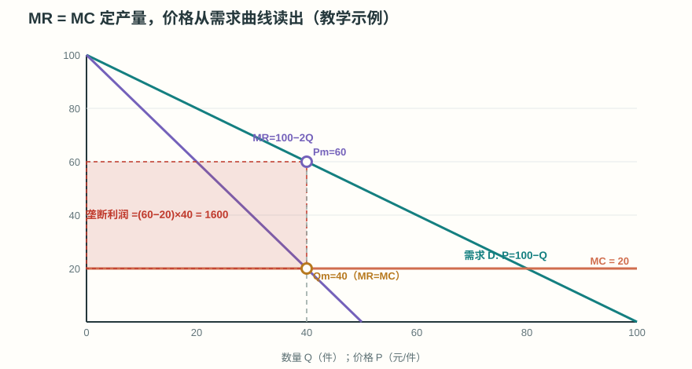
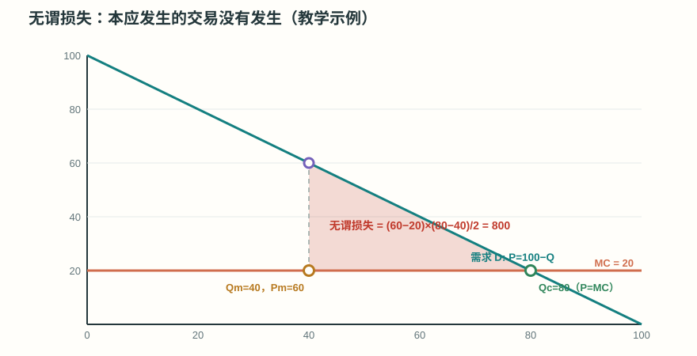

CHAPTER 15 · MICROECONOMICS
垄断：市场势力与价格歧视
只有一个卖家，却仍受需求曲线约束：用同一组方程推导 P>MC、垄断利润与无谓损失。
垄断者能随便定价吗？
如果市场上只有一个卖家，他是不是想定多高就多高？并不是。他面对的仍是整条向下倾斜的需求曲线：想多卖一单位，就得把价格降下来。垄断者受需求曲线的约束，问题在于他会选择比完全竞争更少的产量、更高的价格。
本章用一个教学示例把这件事算清楚：需求 P=100−Q，边际成本恒为 MC=20。我们将求出垄断者最优的产量与价格，并与完全竞争对比，量化它的效率损失。
进入壁垒：垄断为什么会存在
如果一个行业利润丰厚，为何其他企业不进来分一杯羹？因为有进入壁垒 barriers to entry，主要有三类：
- 法律壁垒：专利、版权、特许经营权等由法律设定的排他性权利。专利以限期的独占换取技术公开。
- 自然垄断：当一家企业供应全部需求的平均成本低于两家各自供应一部分时出现，通常源于固定成本极高、边际成本很低的规模经济，如电网、供水管网。
- 战略性壁垒：在位企业主动阻止进入，如控制关键资源、用巨额沉没成本吓退潜在进入者、掠夺性定价等。
壁垒决定了垄断力量的持久性：专利会过期，技术会被颠覆，替代品会涌现。经济学家熊彼特提出的“创造性破坏”正是描述旧垄断被新垄断取代的动态过程。因此不宜把任何垄断当成永久不变。
垄断者的边际收益小于价格
完全竞争企业面对水平需求，P=MR。垄断者不同：它的需求曲线向下倾斜，多卖一单位必须对所有单位降价，因此边际收益 MR 小于价格 P。用教学示例推导：
对比一下：需求 P=100−Q 的截距是 100、斜率是 −1；MR=100−2Q 从同一截距 100 出发，但斜率是 −2——MR 曲线的斜率是需求曲线的两倍，正好平分需求曲线与纵轴之间的水平距离。
MR = MC 定价与垄断利润
垄断者选择产量的规则和任何企业一样：MR = MC；不同的是，它随后从需求曲线（而不是从 MC）读出价格。
教学示例：令 MR=MC，即 100−2Q=20，解得 Qm=40；代入需求得 Pm=100−40=60。垄断利润 = (Pm−MC)·Qm = (60−20)·40 = 1600。

无谓损失：与完全竞争的对比
把同一个市场交给完全竞争，结果会不同：P=MC=20，代入需求得 Qc=80。垄断与竞争的差异一目了然：
| 对比维度 | 完全竞争 | 垄断 |
|---|---|---|
| 价格 | P = MC = 20 | P = 60 > MC |
| 产量 | Q = 80 | Q = 40 |
| 消费者剩余 | 3200 | 800 |
| 生产者剩余 / 垄断利润 | 0 | 1600 |
| 总剩余 | 3200 | 2400（无谓损失 800） |
无谓损失 deadweight loss 指那些“本应发生却没有发生”的交易：消费者对第 40 到第 80 件商品的支付意愿高于 MC，但垄断者为了维持高价而限制产量，这些交易落空，其价值谁也没拿到。其面积可以用三角形算出：

价格歧视：同一商品不同价格
以上讨论假设垄断者对所有人收同一个价，称为单一价格垄断。若不同消费者的支付意愿不同，垄断者可能对不同群体或不同数量收取不同价格，而价差并非来自成本差异——这就是价格歧视 price discrimination。常见分三级：
| 类型 | 含义 | 典型情形 |
|---|---|---|
| 一级（完全） | 对每一单位按消费者的保留价格收费 | 一对一讨价还价、拍卖（近似） |
| 二级 | 价格随购买数量变化 | 批发 vs 零售、大包装单价更低 |
| 三级 | 对不同可识别群体收不同价格 | 学生票、老年优惠、分地区定价 |
若垄断者能精确地对每一单位收取保留价格（一级价格歧视），理论上产量会扩大到 P=MC 的水平，无谓损失被消除，但全部消费者剩余转为卖方收入。现实中很难知道每个人的支付意愿，因此一级价格歧视极罕见，日常遇到的多为二、三级。
价格歧视要能实施，通常需要两个条件：能按支付意愿把消费者区分开，且能阻止低价买家转卖给高价买家。还需注意：差异化定价可能触及公平关切与法律合规问题，它不只是效率问题。
交互实验：改变边际成本
垄断定价实验
需求固定为 P=100−Q，拖动滑块改变边际成本 MC，观察垄断产量、价格、利润与无谓损失，并与完全竞争下的产量对比。
Qm=40，Pm=60，利润=1600；竞争产量 Qc=80，无谓损失=800。
每次根据解析解重新计算，不使用随机值；默认 MC=20 对应正文的教学示例。
若 MC 从 20 降到 0（例如软件的边际成本近乎为零），垄断者的价格会怎么变？无谓损失又会怎么变？
查看答案
用同一组公式：MC=0 时 Qm=50、Pm=50、利润 2500；竞争产量 Qc=100，无谓损失 = (50−0)×(100−50)/2 = 1250。即边际成本降低后，垄断价格下降、产量上升，但垄断产量仍低于社会最优，无谓损失变大。
引用文献、定义与适用范围
本章的方程与数值（需求 P=100−Q、MC=20）均为教学示例，不是观测数据；垄断、进入壁垒与价格歧视的概念参考以下教材：
- OpenStax · Principles of Microeconomics 3e, Ch. 7: Production, Costs, and Industry Structure
- OpenStax · Principles of Microeconomics 3e（教材首页）
本章未引用具体反垄断案卷或罚款金额，以避免不可核验的数据；如需了解案例，应查阅监管机构的公开执法记录。需要再次提醒：垄断未必总是坏事，其福利评价需结合规模经济、创新与外部性具体分析。